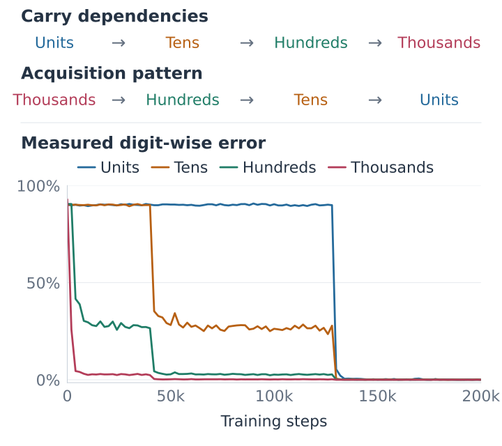

Shattered Compositionality: Counterintuitive Learning Dynamics of Transformers for Arithmetic
Transformers can acquire arithmetic subskills in reverse or in parallel relative to standard procedures. We study how training-data correlations shape these learning patterns and how competition between subskills can lead to brittle generalization.
My research contributions
I led the experimental design, implementation, and analysis, connecting how transformers learn arithmetic to the statistical structure of their training data.
- Statistical diagnostics. I analyzed conditional dependencies among addition digits and developed conditional mutual-information diagnostics to measure which relationships model predictions capture during training.
- Controlled experiments. I designed an ablation that randomized only the thousands-place answer digit. In the reversed-output setting, models failed to learn the correctly labeled lower digits, revealing interdependence between arithmetic subskills.
- Generalization at scale. I constructed distribution-shift tests for comparison and sorting, trained transformers with up to 100M parameters from scratch, and evaluated 10 pretrained language models on mathematical word problems with added reasoning steps. These experiments exposed how strong accuracy on familiar problems can coexist with brittle generalization.